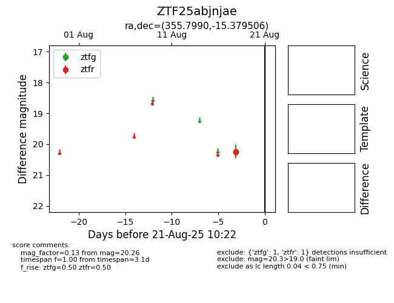

Target ZTF25abjnjae at 2025-08-21 10:22, see:
FINK: fink-portal.org/ZTF25abjnjae
Lasair: lasair-ztf.lsst.ac.uk/objects/ZTF25abjnjae
ALeRCE: alerce.online/object/ZTF25abjnjae
alt names
ZTF25abjnjae (ztf,alerce)
coordinates:
equatorial (ra, dec) = (355.7990,-15.37951)
galactic (l, b) = (66.0134,-70.26917)
photometry
last ztfg=20.24, ztfr=20.26
1 ztfg, 1 ztfr detections
